Jovi Branded Barrel
Argus Brick Camera
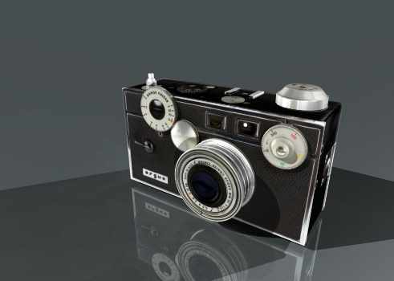
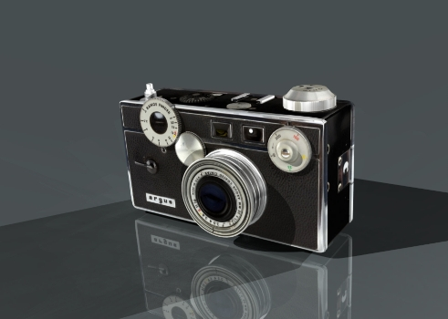
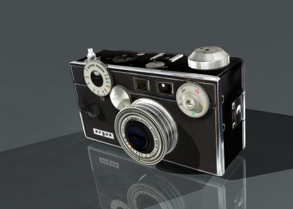
 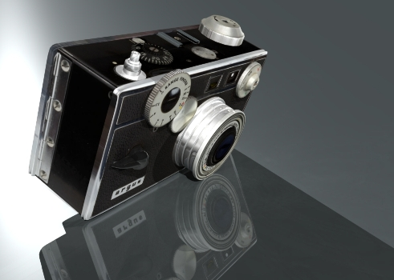
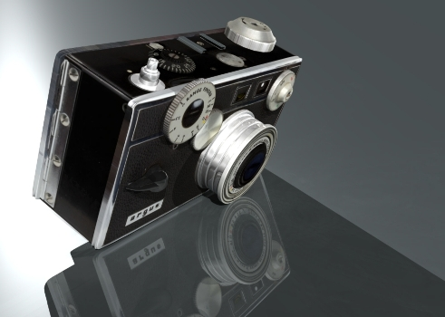

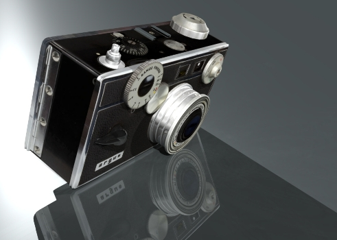
Hospital Lobby
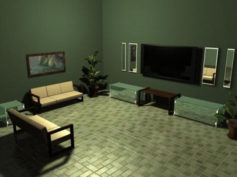
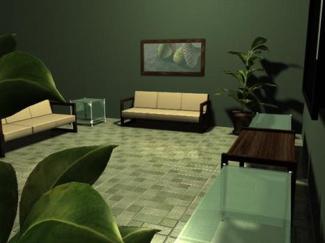
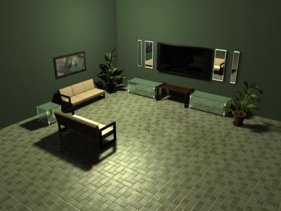
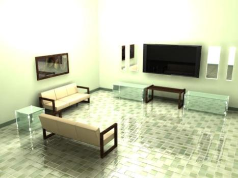
Verizon City Units
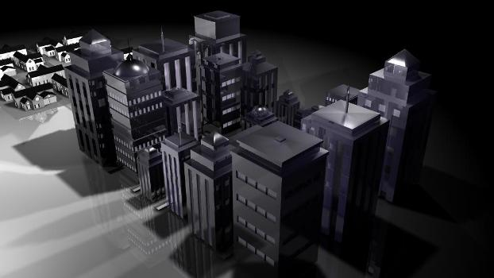
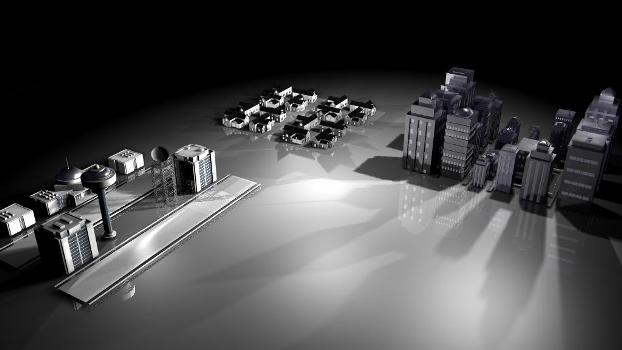
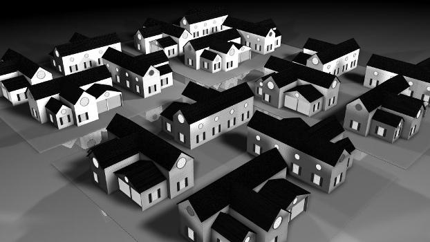
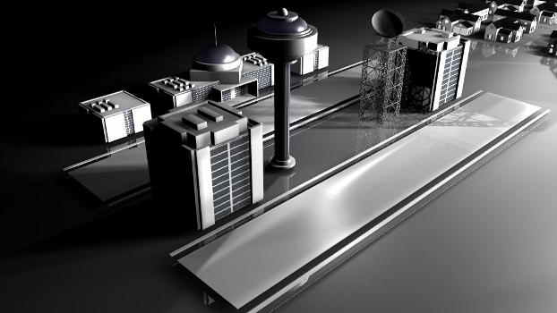
3D*Animation
The third dimension brings another element of relation to multimedia experience. In the past, the interacted have been able to use 2 senses to receive multimedia content, sight and hearing. 3D animations and virtual worlds bring the sense of touch and introduces a whole new dynamic of communication and activates muscle memory to record impactful memories.
*Please feel free to contact me to see working examples of simulation and gaming.
Jovi Branded Barrel
Argus Brick Camera
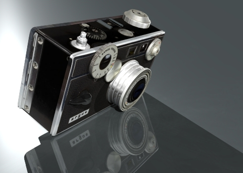
Hospital Lobby
Verizon City Units